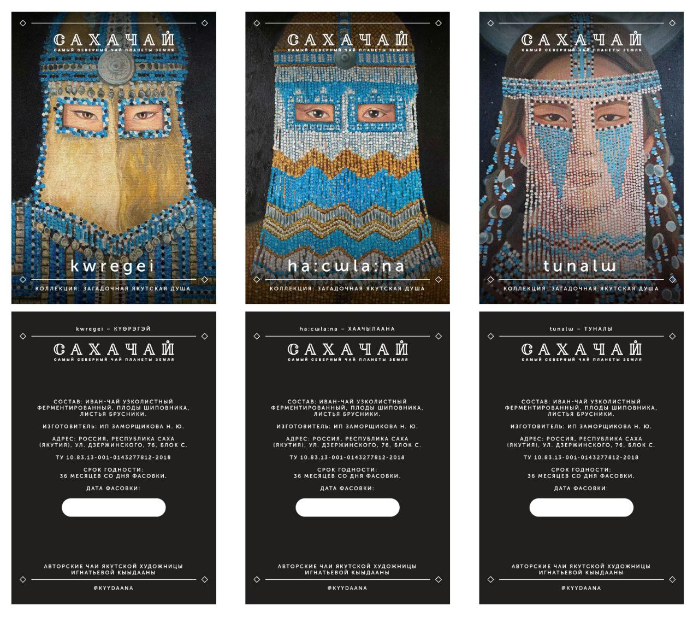
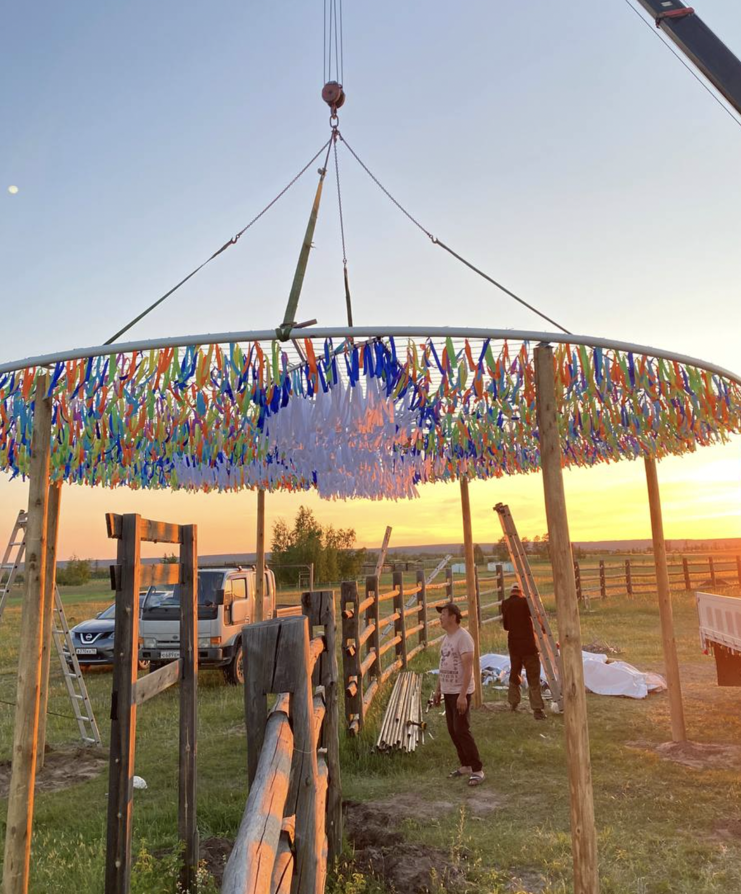
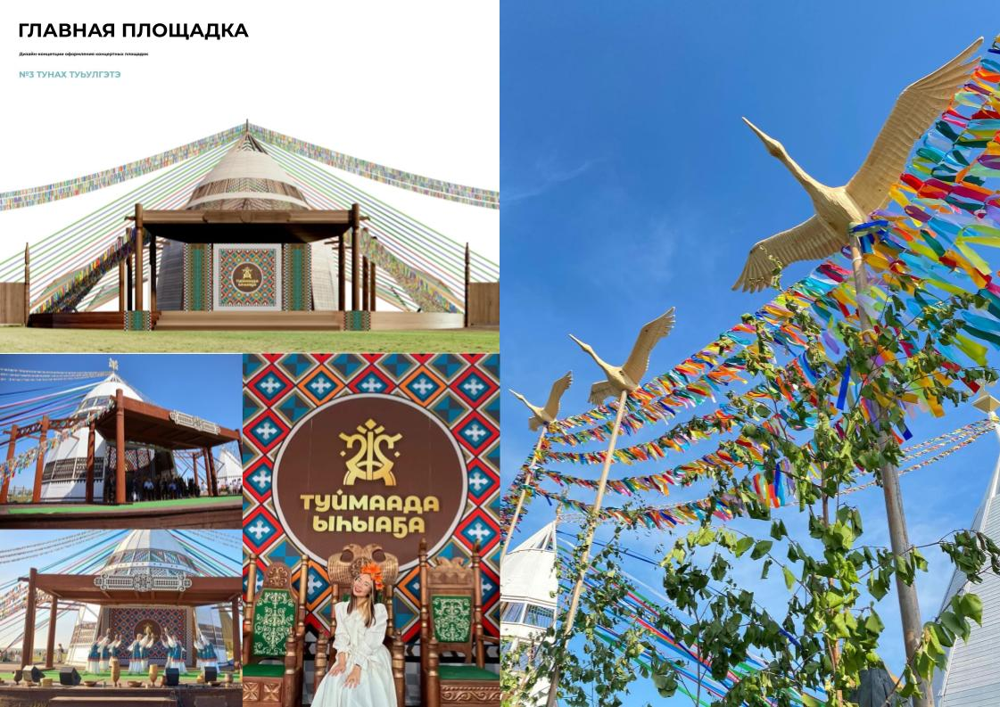
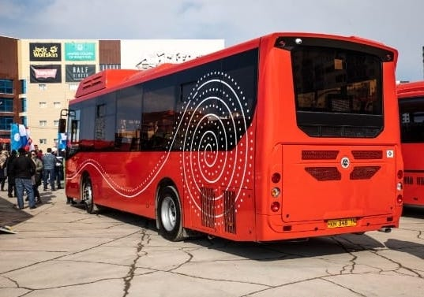

Sakha tea brand collection "Mysterious Sakha soul" －
Kүөregey, Khaachylaana,Tunaly


оһуохайа түһүлгэтэ


Design concept for concert venue


БРЕНДИРОВАНИЕ
100 АВТОБУСОВ ЯКУТСКА
АВТОРЫ:
Игнатьева Кыдана, дизайнер
Сулусчан Арт, дизайн студия